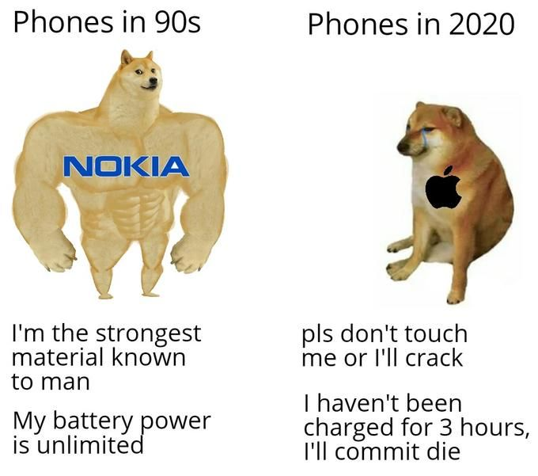
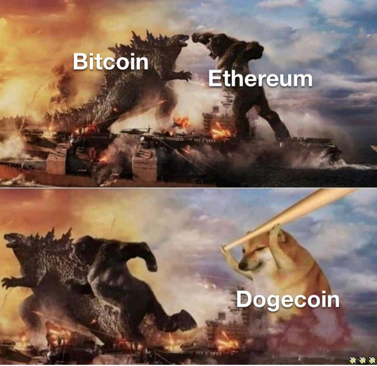
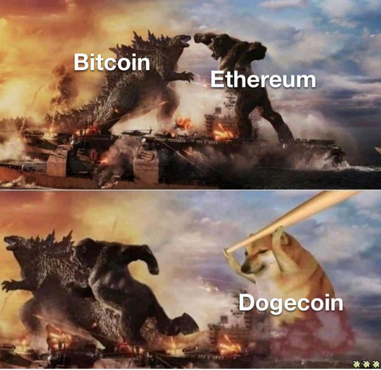

Please Note: Words here are easy-peasy. If your head hurts from TikTok's fast talk, we understand. Just click here for the more detailed version.
Cheems isn't just a pretty picture; it's the first memecoin inspired by a real meme, on Solana.
Who is Cheems?
.jpg)
Cheems started with a funny dog pic on Instagram in 2017. Got big on Reddit, June 2019. People love Cheems.
Gained more fame during COVID-19 with "Swole Doge vs Cheems" meme, which shows old times strong, now times not so strong. Cheems is the now times, makes people laugh.
Cheems also starred in memes with big sticks:
- Godzilla and Kong, with big sticks.
- Cheems bonk dog go "bonk" with big stick.
 

Cheems is big in Spanish-speaking areas too. Phrases like "no puede ser" and "me da ansiedad" are popular.

Why Real Memes Matter for Memecoins
Cheems, Doge, and Pepe memes big deal for memecoins cuz they really make people laugh.
Other memes, like the ones made with big vc money in Web3, not same. They not real internet stuff, feel like someone trying too hard.
CRINGE AF
NOT FUNNY.
WHERE IS THE MEME????
Memecoins with real memes do better. People know them, feel connected. Not just about money, but about culture too.
WE CARE ABOUT CULTURE!!!
Real memes keep memecoins going strong. They stick around, part of internet culture.
Fake memes can't do that.
$CHEEMS as a Case Study:
$CHEEMS, launched May 12, 2021 on Solana
before bonk, wif, and all these mfers
Is the first real memecoin of Solana.
There was 1 "memecoins" before, use animal themes, self-proclaimed memecoin with no memes, not funny
$CHEEMS uses Cheems meme, super famous on internet. This makes it special and important.
Lots of new memecoins every day, but Cheems was first, give historical value, is mega important, study CryptoPunks.
$CHEEMS moon soon.
Biggest yacht party with hodler wen cheems hit $1, free bitches & cocaine for everyone